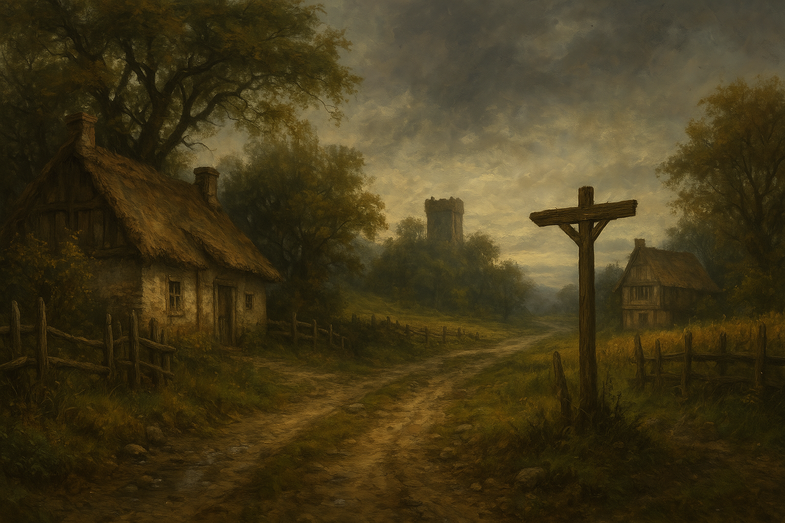

Chapter 1: The Spirit of Spring
Storm of Mudtown

Storm of Mudtown
15049.03.22
當馬車停下時，除了阿龍之外，大家都下車了。近鄉情怯可以說是阿龍最貼切的心情寫照。
赫洛登瀑布內的峭壁上，迎面而來的是一座看起來有點現代化的神殿。Riley 向大家介紹，這是他的研究機構，同時也是風暴與智慧之神喬里森的神殿，名為「渡鴉中樞 The Raven Nexus」，或是當地人習慣的稱法：「瀑布後面 Behind the Fall」。
當眾人走入渡鴉中樞一樓時，躲在鑰的推車上的阿龍心情又更不好了。眼前，一個熟悉的人影正在一樓櫃檯和服務人員交涉。那人是 Addie Applewood。大家疑惑著阿龍到底在扭捏什麼，阿龍則趕緊催促大家離開，Riley 才把大家引導到後方的升降梯，到三樓的客房去放置行李。
大家簡單休息後，來到二樓準備見 Riley。二樓是一座堂皇的教堂，此刻還沒有任何信徒朝拜。大家朝著內部走，推開了後方的門，便是 Riley 的研究室了。Riley 先向大家說明自己的助理因為出差，暫時不在，不然應該是由他來帶大家進到土城去的。
接著，Riley 簡單說明，要請冒險者們協助他搜集一項材料：「在被喬里森祝福過的河水中漂流的蘋果樹漂流木剪下的枝幹，長度需要有成年男子的前臂長，且不能有任何分枝」。在 Riley 的解釋下，冒險者才知道，搜集這個材料的目的，是為了製作一個能讓 Riley 回到 T.I.D.E.S. 的神秘器具（只流傳在像 Richmond 家族這種組織創始家族的歷史中）。Riley 也承諾會給冒險者們每人 50 金幣作為獎賞。阿龍知道在土城，蘋果樹是由 Applewood 家族管理的，絕對不能隨便亂砍，否則會有很嚴重的懲罰。
Riley 也簡單介紹了一下關於土城的重要景點，如：城鎮外的海雅特山（Mt. Hyatt）、流經城鎮中央的維爾河（Vay-El River）、城鎮的市中心軸恩廣場（Zoan Plaza），以及太陽議會（Council of Sols）。Riley 也說明，如果要去議會談重要的事，建議在他的助理回來後，正是登門拜訪。
接著 Riley 便要大家先進城，了解一下土城這個城鎮的生態。走到軸恩廣場，阿龍先看到了過去曾霸凌他的其中兩名年齡與他相仿的年輕人。同時，阿龍也向夥伴們說明了這群被當地人稱為「壞蛋四人幫」，被他簡稱為「壞四人」的霸凌們：喜愛勒索的 Grindle、脾氣暴躁的 Tumble、骯髒惡臭的 Pibble，以及破壞公物 Zaffie。
一小列隊的人走向冒險者們。走在最前面的年輕女孩自我介紹為 Maribel，請冒險者們在明天的春天精靈投票投給他。列隊離開後，冒險者們向阿龍詢問關於這個「春天精靈」的投票，得知在 Maribel 口中霸榜數年，名為 Penelope Applewood（簡稱 Penny）的女孩，是阿龍的舊識，甚至是他的初戀。而那名他們在渡鴉中樞看見的 Addie，則是 Penny 的父親。
不久後，一群鬧哄哄、更大的隊伍出現在市中心，身旁還有不少奏樂聲，以及壞四人等人圍繞在旁。阿龍轉頭一看，隊伍最前面的人便是他思念已久的 Penny。此時，Penny 似乎也看見阿龍了，但因為周圍太嘈雜，加上隊伍不斷前行，阿龍只能看見 Penny 的嘴型好像念著他的名字。
冒險者們迎頭趕上，停在 Penny 前面。Penny 和鑰簡單說了幾句，Penny 也悄悄請他告訴阿龍今晚約在「咖啡廳」見面。
隊伍離開後，冒險者們決定先去太陽議會（上頭有著布條，寫著「謝謝太陽與河水，賜給我們小麥、蘋果和玉米！」），拜訪 Addie。因為知道土城的蘋果樹都是由 Applewood 家族負責照料的，直接找大家長 Addie 談談，似乎是最好的選擇（而且在冒險者們的認知中，阿龍與 Applewood 家的 Penny 關係似乎不錯，應該可以有較好的談判空間）。阿龍也想起土城的議會由被他暱稱為「蘋果先生」的 Applewood 先生負責外交；「小麥先生」Wheaton 先生負責內政；「玉米小姐」Cornell 小姐負責娛樂–明日的春天精靈投票，便是由他負責。
然而，此時 Applewood 先生並未在議會內，冒險者們只好在 Wheaton 先生的招待下休息了一會兒後，便離開了。
推開太陽議會的大門，一名孩子出現在大家面前。阿龍一看，這是 Penny 的弟弟，Cassius Applewood（簡稱 Cash），Cash 正用他水汪汪的大眼睛看著阿龍。Cash 與冒險者們一同離開議會後，便說了他來此行的目的。他要參與明天的春天精靈投票。依阿龍所知，參選春天精靈的條件是未成年的女子（就算是外地人也可以，因此冒險者們一開始也鼓吹毛毛參加），但 Cash 很顯然是個男孩子。不過過去的確是有男生扮裝成女生來參選，也被接受的案例。然而，這個一直以來把它當成大哥哥偶像來看待小弟，竟然也要參選，讓他感到大為震驚。Cash 說道，他知道姊姊 Penny 這三年來當春天精靈其實很辛苦，但他也知道擔任春天精靈可以為家裡得到的優勢太大，姊姊願意忍辱負重，繼續參選。較年輕個幾歲的 Cash，希望能代替姊姊來參選，讓姊姊可以卸下重擔，同時又不會失去 Applewood 家的優勢。阿龍有聽說，過去土城的妓院，很多是招募過去的春天精靈作為頭牌，雖然知道現在妓院產業已經沒落了，但他也知道沒選上春天精靈，似乎對 Penny 來說也會有不太好的結果。冒險者們討論後，決定邀請 Cash 晚上也一起來咖啡廳，與 Penny 一起商議。
接著冒險者們決定前往阿龍家拜訪。來到土城後，已經聽過不少人向阿龍提起，應該要去見見他父親的。但阿龍離開土城時，便是因為誤傷了自己的父親，因此內心難以面對。
經過「土堤學習中心 Tutty Learning Center」，阿龍也告訴其他夥伴，這是他以前上學的地方。然而冒險者們也很疑惑，怎麼上了學，阿龍還是個文盲？
來到家門前，冒險者們推著阿龍前去敲門，但阿龍敲了門就跑走了。最終阿龍終於鼓起勇氣。阿龍的媽媽看見自己的孩子終於回家了，露出慈祥的笑容，也歡迎阿龍的朋友們一起進來家裡。阿龍和夥伴們一起坐在沙發上，看著也在沙發上的阿龍爸爸，拄著拐杖，表情木然。
在阿龍媽媽煮了家常菜，端上客廳的桌子後，大家邊吃邊聊。阿龍對於自己誤傷爸爸這件事很感到愧疚，但還是問了爸爸他的傷勢。阿龍爸爸則回答他，他是爬山時不小心摔到腿，所以才拄著拐杖的。冒險者們也讀了拐杖上刻的字，上面寫著「願我的孩子出外冒險平安歸來」。
離開阿龍家後，阿龍先帶著大家到市區尋找裁縫店，希望能有一套正裝，以赴今晚和 Penny 在咖啡廳的約。裁縫店老闆在收了阿龍額外的錢後，要他在日落前再來拿衣服。
接著，大家回了一趟渡鴉中樞，碰巧遇上出差回來的 Riley 的助手，Green，大家也和他打了招呼，了解平常都是 Green 到土城內和議會人員溝通。明日的春天精靈投票，也將是他會協助執行。
冒險者們趁著下午的時間，往山邊去，來到農地區。他們盤算著該如何才能成功採集到 Riley 要求的蘋果木，卻被負責栽種與守衛農田的農人們發現。冒險者們也得知海雅特山上似乎有一群山賊。在密謀竄到農田內的計畫失敗後，冒險者們只能先慢慢回到市區，做別的計劃。
時間差不多，大家在陪阿龍拿完他的衣服（一套帥氣的西裝，以及一個紅色的小領結，穿在阿龍身上十分帥氣）後，便一併前往當地人習慣簡稱「咖啡廳」的 Poderick’s 咖啡廳。
在咖啡廳前，大家看見 Cash 和 Penny 兩人似乎起了點口角，得知 Penny 並不知道 Cash 今晚也要一起來咖啡廳。他們兩人先後進到咖啡廳後，冒險者們才進入。在服務生的引導下，阿龍走入了咖啡廳後頭最右手邊的包廂，而其他冒險者們則與已經入座的 Cash 共用兩張桌子。
包廂內，青春而亮麗的 Penny 與阿龍思念的模樣別無二致。阿龍在談話過程中得知了關於「春天精靈」投票的不少內幕。土城的居民每戶每個月都需要上繳 10% 的收入或農作物給海雅特山的山賊，而春天精靈的家庭則可以免除此項規則，因此有很多家庭為了這個好處，紛紛推舉自己家的孩子去參選。然而，不為其他人所知的，春天精靈在被選上後，會被議會的玉米小姐以一個法器在肩膀上印上一個被稱為「翠綠印記（Mark of Verdant）」的標記，而且每個月要在印記發痛時被玉米小姐帶去見山賊一次。依照玉米小姐的說法，翠綠印記只有辦法印在女生身上，因此要是 Cash 以男兒身被選上春天精靈，也是無法履行春天精靈的義務的。
阿龍聽了感到恐慌。山賊，是真的存在的。而在 Penny 的訴說下，他得知這個翠綠印記，是山賊首領 Oswald Creighton 拿來執行用來控制自己山賊手下的儀式所用。他也威脅，如果不每月執行儀式，山賊們會控制不了自己燒殺擄掠的衝動，下山把土城給滅了。
然而，在 Penny 口中，他每個月上山去，這個被他稱為 Big Os 的山賊首領其實對他挺好、挺溫柔的，也不會傷害他。他認為自己是愛上 Big Os 了。另阿龍更心痛的是，Penny 覺得自己在 Big Os 身上看見了很多與阿龍相似之處：壯碩寬闊的肩膀，善良的本質，以及總是為人著想的心。Penny 說他試著說服 Big Os 和他私奔，兩人一起逃離這個無法改變的命運，但 Big Os 為了自己的群落，割捨不下，讓 Penny 也不知道該怎麼辦。阿龍看著餐前點的蘋果汁，不知怎麼喝下，只能衝出包廂外跑進廁所，對著鏡子就是一陣猛搥。
包廂外，冒險者們問著 Cash 關於春天精靈的事，卻發現他除了姊姊 Penny 一個月會消失一兩天以外，什麼都不知道。而對於隔天的春天精靈投票，Cash 除了求冒險者外，根本沒有別的對策。雷亞過了一段時間，決定去廁所變身成蒼蠅，飛入阿龍和 Penny 的包廂，試圖竊聽，然而，此時正好是阿龍衝出包廂外跑去廁所的時間，因此雷亞什麼都沒聽到。
阿龍走出廁所，來到 Cash 和其他冒險者們的桌子，將領結扯掉，喊了幾聲生氣的話，口中說著什麼討山賊之類的，甚至還想出了以討伐山賊來和議會談判，做為拿蘋果木的交換條件。其他人對於阿龍突然吐出這麼多資訊，還腦袋清楚到這種程度，大感意外。不久後包廂傳出了 Penny 的尖叫聲。
冒險者們一同衝了過去，發現雷亞躺在 Penny 面前的桌上。原來是 Penny 看見桌上有隻蒼蠅，順手揮過去，雷亞來不及躲開，一被打到便變回原形，嚇著了 Penny。
冒險者們也順理成章全部進了包廂。大家與 Applewood 姊弟一同將已知的資訊統整，並在 Penny 的提議下，在明天選完春天精靈後，後天應該可以一起上山去見山賊。依照 Penny 的計算，沒意外後天應該會是他的印記發痛的日期。
冒險者們先讓 Applewood 姊弟回家去，也接了阿龍的父母來到渡鴉中樞過夜。接著冒險者們便回到渡鴉中樞二樓 Riley 的辦公室，與 Riley 和 Green 稟報他們的計劃。
冒險者們回到三樓，準備就寢。原本想和阿龍的父母聊聊天，鑰卻發現阿龍父母對阿龍的管教方式似乎有很大的問題—不知道這是阿龍父母的問題，還是地侏的文化就是如此？因此鑰和毛毛便到阿龍的房間安慰阿龍了。同一時間，雷亞帶著羅羅（將羅羅綁在他身上）到附近的樹林走走，想摘採幾顆水果送給阿龍。雷亞也在樹林中感受到涅西斯的光輝，似乎自己離涅西斯有那麼近了一點。然而好不容易找到的兩顆果實，其中一顆在雷亞冥想時被羅羅吃掉了，只剩下一顆能帶給阿龍。
15049.03.23
一早起床後，大家一起到二樓辦公室去找 Riley 和 Green，簡單吃了他們為冒險者們準備的麵包作為早餐。Green 表示他接下來會先準備等等的春天精靈投票—他負責擔任公正第三方的監票人。
冒險者們決定在投票前剩餘的一兩個小時，先去拜訪 Applewood 家。Addie 和此時已經離開家裡，前往議會，準備投票的工作了；Penny 則早已和他的遊行隊伍們在廣場繞境了。因此冒險者們決定也前往議會去。
到了議會，Green 還沒抵達前，議會的休息區只有三名代表。和議會簡單溝通後，冒險者們確認了「山賊」確實存在，也得知了這群山賊團體有個響亮的稱號：海雅特山交響樂 Mt. Hyatt Symphony。他們也得知被稱為玉米小姐的 Connie Cornell，他負責的各種「傳統」，都是傳承下來的，稍微減低了冒險者們對他的敵意。不過，冒險者們也從 Connie 口中得知，給春天精靈用的翠綠印記，似乎和春天精靈體內的月經週期有很大的關係，因此他們也更清楚知道原本想參選的 Cash，是不可能被選上的了。
玉米小姐和小麥先生先暫時離開，留下冒險者們與 Addie 私下談談。冒險者們提議上山剿匪，以和 Addie 換取 Riley 請他們尋找的蘋果木枝幹。除此之外，也會給他們等同於居民人數的金幣作為報酬。Addie 對提議沒有太大的反彈，但請冒險者們在投票後，再去找他，他得先和議會成員們討論出個結果。
離開了議會，冒險者們先前往投票場地。他們正好碰上 Penny 的隊伍，浩浩蕩蕩，Penny 也特別和阿龍打了個招呼。情緒複雜的阿龍不知道該擺什麼表情。冒險者們在投票前也找到了他們前一天遇到的另一名春天精靈候選人：Maribel。Maribel 很清楚知道自己沒什麼勝算，但還是堅持想選下去。基於大家對 Penny 傷了阿龍的心，冒險者們決定要幫 Maribel 一把，Maribel 也感謝了冒險者們，承諾他們不管投票結果如何，今晚都要請他們吃一餐。
時間到了，議會的 Connie 和 Green 先生一同站上了舞台。Connie 簡單說明了本次投票的方式：每個人都會到台前領取選票，並在另一張紙上簽名，以示自己已領票，接著在選票上寫上自己中意的春天精靈人選，投入箱中。接著 Connie 介紹了本次春天精靈的候選人：蟬聯三年的現役春天精靈 Penny Applewood，以及他的競爭對手 Maribel Muddlewick。兩者的氣勢差距極為明顯，除了冒險者們外，很顯然 Maribel 沒有任何的支持者。冒險者們也發現，Penny 稍微有些身體不適的症狀，再次提醒他們從 Connie 那兒聽到與翠綠印記，和月經週期有很大的關聯。他們也想起前一晚 Penny 提到又快上山了這句話。
開票的結果，Penny 拿了一百多票，Maribel 則只拿了 6 票，除此之外還有 20 票以上的廢票。Maribel 輸的心甘情願，雖有不甘，但也無可奈何。在 Connie 的主持下，Penny 欽點了自己的春天騎士團：阿龍口中的「壞四人」，以及「阿龍和他的朋友們」。
隨著春天精靈的投票結束，土城的居民們熱烈慶祝著。冒險者們聽見 Connie 宣布今晚午夜，Penny 就要以春天精靈的身份，在春天精靈的護送下，前往海雅特山去一趟。想著要和壞四人一起行動，冒險者們不禁感到身體不適。
想著壞四人，冒險者們就聞到惡臭的 Pibble。冒險者們試圖幫他清洗，土城的居民們在狂歡的氣氛下，也跟著起鬨。大家一同把 Pibble 丟到穿越廣場的維爾河內，強迫 Pibble 搓洗身體。在快半小時的時間後，Pibble 的身體已被洗得視覺上完全看不出髒污，但走出河後，身上的惡臭卻還是讓人感到暈眩。這場鬧劇居民們也看夠了，也就離開了。
冒險者們在附近看見一個人的 Maribel，和他搭訕。Maribel 很感激他們為他投下的票，也邀請他們一起到他家去，他要做午餐給大家吃。
冒險者們發現 Maribel 獨自一人住在家裡，家裡的狀況看起來挺不錯的，雖然稱不上豪華，但裡面的擺設和書籍都十分有品味。Maribel 表示自己的父母外出旅行兩年了，至今尚未歸來，但也讓他練就了可以好好照料自己的各種生活技能。鑰和毛毛發現 Maribel 的書籍十分多樣，Maribel 也表示自己平常就是以閱讀為樂，什麼都看。抽出其中一本，竟然是與克里歐門王國的科技發展史有關，而且內容是用矮人與寫的。鑰大力邀請 Maribel 去他陸上的藏書處拜訪他，但 Maribel 表示希望先把自己還沒看完的書看完，才有想出去旅行的心。
菜色擺上桌，冒險者們發現 Maribel 的廚藝也極佳。Maribel 要冒險者們先吃，自己會陸續上更多菜，但冒險者們不忍心，要等他一起用餐。餐桌上，冒險者得知 Maribel 其實聰明勇敢，又十分有獨立思考的能力。Maribel 對於山賊的事也略有耳聞，也可以猜想到春天精靈和山賊的是脫不了關係。他期望如果能選上春天精靈，有機會可以上山去和山賊們進行談判，找出對山賊和土城都有利的解方。然而，明年他就成年了，不符合參選春天精靈的資格，因此這個願望就只能隨風而去了。
對於如此讓人心疼的 Maribel，冒險者們想方設法想邀請他加入冒險團隊，認為他一定也會喜歡一起冒險的生活，但 Maribel 很顯然沒有共同的想法。
午餐後，冒險者們前去拜訪太陽議會。Addie 表示他和議會達成了共識，願意以冒險者們剿除山賊為條件，給予他們包含他們要的蘋果木枝幹。除此之外，也會給他們等同於居民人數的金幣作為報酬。